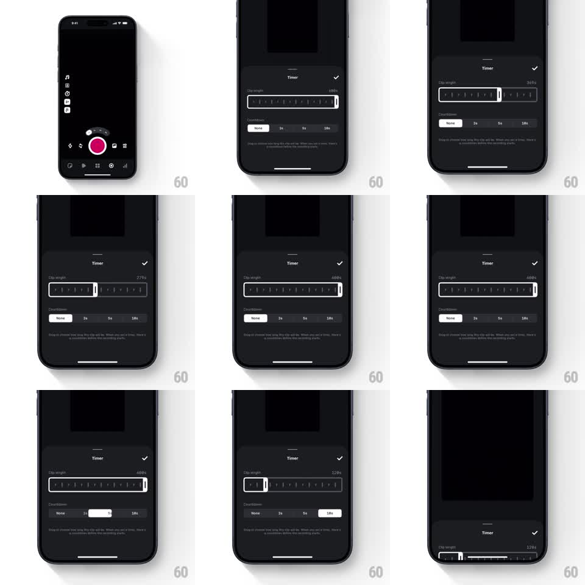

Media
Frame-by-frame

Rebuild this interaction 1:1: Edits timer sheet - a dark bottom sheet titled "Timer" with a scrubbable ruler slider for clip length (values like 120s, 279s, 480s, 608s ticking as the ruler drags), a "Countdown" segmented selector (None / 3s / 5s / 10s) with a springy highlight pill, and a checkmark to confirm, collapsing back into the camera screen.

Rebuild this interaction 1:1: Edits timer sheet - a dark bottom sheet titled "Timer" with a scrubbable ruler slider for clip length (values like 120s, 279s, 480s, 608s ticking as the ruler drags), a "Countdown" segmented selector (None / 3s / 5s / 10s) with a springy highlight pill, and a checkmark to confirm, collapsing back into the camera screen. ## Integration Integration: stack-agnostic spec - springs given as stiffness/damping, timed motions as duration + curve; map every value to your framework and animation library of choice. ## Scene Dark camera screen with the pink record button. The sheet: grabber handle, "Timer" title with a checkmark top-right, "Clip length" label with the live value at right, a horizontal ruler with tick marks and a white window bracket marking the selected length, "Countdown" row with segments (None, 3s, 5s, 10s), and explainer text below. ## Motion spec Pattern: ruler scrub with detents and segmented pill. - The sheet slides up (spring ~300/20, small overshoot), rows staggering in (50ms apart). - Drag the ruler: ticks pass under the fixed bracket 1:1, the value ticking live (60s -> 608s); flicks coast with deceleration and snap to the nearest 1s detent (spring ~360/22, soft tick feedback at each 10s mark). - The bracket edges stretch slightly while scrubbing fast (scale X 1.05) and relax on settle. - Countdown segments: the white highlight pill slides to the tapped segment (spring ~340/16), label inverting to black. - Tap the checkmark: values commit, the sheet slides down (250ms ease-in), and the camera's timer badge updates. ## Calibration - The ruler feels like film sliding through a gate - smooth drag, crisp detents. - The live value is right-aligned and tabular; it never shifts the label. ## Reduced motion Sheet fades up (200ms); ruler snaps without coasting. ## Don't miss - The white bracket is the stationary element; the ruler moves beneath it. - The explainer text stays dim and static through all interactions.